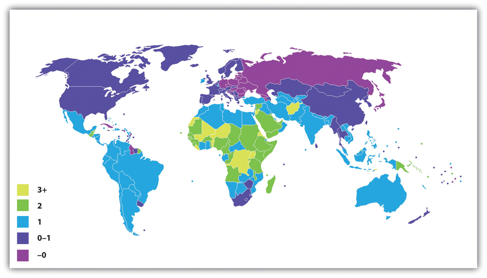
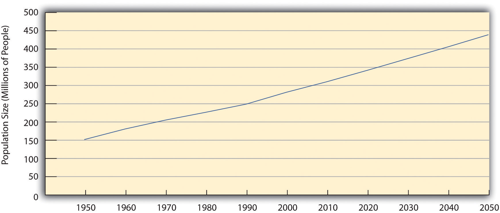

Now that you are familiar with some basic demographic concepts, we can discuss population growth and decline in more detail. Three of the factors just discussed determine changes in population size: fertility (crude birth rate), mortality (crude death rate), and net migration. The natural growth rateThe difference between the crude birth rate and the crude death rate. is simply the difference between the crude birth rate and the crude death rate. The U.S. natural growth rate is about 0.6% (or 6 per 1,000 people) per year (Rosenberg, 2009).Rosenberg, M. (2009). Population growth rates. Retrieved from http://geography.about.com/od/populationgeography/a/populationgrow.htm When immigration is also taken into account, the total population growth rate has been almost 1.0% per year (Jacobsen & Mather, 2010).Jacobsen, L. A., & Mather, M. (2010). U.S. economic and social trends since 2000. Population Bulletin, 65(1), 1–20.
Figure 19.6 "International Annual Population Growth Rates (%), 2005–2010" depicts the annual population growth rate (including both natural growth and net migration) of all the nations in the world. Note that many African nations are growing by at least 3% per year or more, while most European nations are growing by much less than 1% or are even losing population, as discussed earlier. Overall, the world population is growing by about 80 million people annually.
Figure 19.6 International Annual Population Growth Rates (%), 2005–2010
Source: Adapted from http://en.wikipedia.org/wiki/File:Population_growth_rate_world_2005-2010_UN.PNG.
To determine how long it takes for a nation to double its population size, divide the number 70 by its population growth rate. For example, if a nation has an annual growth rate of 3%, it takes about 23.3 years (70 ÷ 3) for that nation’s population size to double. As you can see from the map in Figure 19.6 "International Annual Population Growth Rates (%), 2005–2010", several nations will see their population size double in this time span if their annual growth continues at its present rate. For these nations, population growth will be a serious problem if food and other resources are not adequately distributed.
Demographers use their knowledge of fertility, mortality, and migration trends to make projections about population growth and decline several decades into the future. Coupled with our knowledge of past population sizes, these projections allow us to understand population trends over many generations. One clear pattern emerges from the study of population growth. When a society is small, population growth is slow because there are relatively few adults to procreate. But as the number of people grows over time, so does the number of adults. More and more procreation thus occurs every single generation, and population growth then soars in a virtual explosion.
We saw evidence of this pattern when we looked at world population growth. When agricultural societies developed some 12,000 years ago, only about 8 million people occupied the planet. This number had reached about 300 million about 2,100 years ago, and by the 15th century it was still only about 500 million. It finally reached 1 billion by about 1850 and by 1950, only a century later, had doubled to 2 billion. Just 50 years later, it tripled to more than 6.8 billion, and it is projected to reach more than 9 billion by 2050 (U.S. Census Bureau, 2010)U.S. Census Bureau. (2010). Statistical abstract of the United States: 2010. Washington, DC: U.S. Government Printing Office. Retrieved from http://www.census.gov/compendia/statab (see Figure 19.7 "Total World Population, 1950–2050").
Figure 19.7 Total World Population, 1950–2050

Source: Data from U.S. Census Bureau. (2010). Statistical abstract of the United States: 2010. Washington, DC: U.S. Government Printing Office. Retrieved from http://www.census.gov/compendia/statab.
Eventually, however, population growth begins to level off after exploding, as explained by demographic transition theory, discussed later. We see this in the bottom half of Figure 19.7 "Total World Population, 1950–2050", which shows the average annual growth rate for the world’s population. This rate has declined over the last few decades and is projected to further decline over the next four decades. This means that while the world’s population will continue to grow during the foreseeable future, it will grow by a smaller rate as time goes by. As Figure 19.6 "International Annual Population Growth Rates (%), 2005–2010" suggested, the growth that does occur will be concentrated in the poor nations in Africa and some other parts of the world. Still, even there the average number of children a woman has in her lifetime dropped from six a generation ago to about three today.
Past and projected sizes of the U.S. population appear in Figure 19.8 "Past and Projected Size of the U.S. Population, 1950–2050 (in Millions)". The U.S. population is expected to number about 440 million people by 2050.
Figure 19.8 Past and Projected Size of the U.S. Population, 1950–2050 (in Millions)
Source: Data from U.S. Census Bureau. (2010). Statistical abstract of the United States: 2010. Washington, DC: U.S. Government Printing Office. Retrieved from http://www.census.gov/compendia/statab.

Thomas Malthus, an English economist who lived about 200 years ago, wrote that population increases geometrically while food production increases only arithmetically. These understandings led him to predict mass starvation.
The numbers just discussed show that the size of the United States and world populations has increased tremendously in just a few centuries. Not surprisingly, people have worried about population growth and specifically overpopulation at least since the 18th century. One of the first to warn about population growth was Thomas Malthus (1766–1834), an English economist, who said that population increases geometrically (2, 4, 8, 16, 32, 64, 128, 256, 512, 1024…). If you expand this list of numbers, you will see that they soon become overwhelmingly large in just a few more “generations.” Malthus (1798/1926)Malthus, T. R. (1926). First essay on population. London, England: Macmillan. (Original work published 1798) said that food production increases only arithmetically (1, 2, 3, 4, 5, 6…) and thus could not hope to keep up with the population increase, and he predicted that mass starvation would be the dire result.
During the 1970s, population growth became a major issue in the United States and some other nations. Zero population growth, or ZPG, was a slogan often heard. There was much concern over the rapidly growing population in the United States and, especially, around the world, and there was fear that our “small planet” could not support massive increases in the number of people (Ehrlich, 1969).Ehrlich, P. R. (1969). The population bomb. San Francisco, CA: Sierra Club. Some of the most dire predictions of the time warned of serious food shortages by the end of the century.
Fortunately, Malthus and ZPG advocates were wrong to some degree. Although population levels have certainly soared, the projections in Figure 19.7 "Total World Population, 1950–2050" show that the rate of increase is slowing. Among other factors, the development of more effective contraception, especially the birth control pill, has limited population growth in the industrial world and, increasingly, in poorer nations. Food production has also increased by a much greater amount than Malthus and ZPG advocates predicted. Concern about overpopulation growth has weakened, as the world’s resources seem to be standing up to population growth. Widespread hunger in Africa and other regions does exist, with hundreds of millions of people suffering from hunger and malnutrition, but many experts attribute this problem not to overpopulation and lack of food but rather to problems in distributing the sufficient amount of food that exists. The “Sociology Making a Difference” box discusses these problems.
Another factor might have played a role in weakening advocacy for ZPG: criticism by people of color that ZPG was directed largely at their ranks and smacked of racism. The call for population control, they said, was a disguised call for controlling the growth of their own populations and thus reducing their influence (Kuumba, 1993).Kuumba, M. B. (1993). Perpetuating neo-colonialism through population control: South Africa and the United States. Africa Today, 40(3), 79–85. Although the merits of this criticism have been debated, it may have still served to mute ZPG advocacy.
World Hunger and the Scarcity Fallacy
A popular belief is that world hunger exists because there is too little food to feed too many people in poor nations in Africa, Asia, and elsewhere. Sociologists Stephen J. Scanlan, J. Craig Jenkins, and Lindsey Peterson (2010)Scanlan, S. J., Jenkins, J. C., & Peterson, L. (2010). The scarcity fallacy. Contexts, 9(1), 34–39. call this belief the “scarcity fallacy.” According to these authors, “The conventional wisdom is that world hunger exists primarily because of natural disasters, population pressure, and shortfalls in food production” (p. 35). However, this conventional wisdom is mistaken, as world hunger stems not from a shortage of food but from the inability to deliver what is actually a sufficient amount of food to the world’s poor. As Scanlan and colleagues note,
A good deal of thinking and research in sociology suggests that world hunger has less to do with the shortage of food than with a shortage of affordable or accessible food. Sociologists have found that social inequalities, distribution systems, and other economic and political factors create barriers to food access. (p. 35)
This sociological view has important implications for how the world should try to reduce global hunger, say these authors. International organizations such as the World Bank and several United Nations agencies have long believed that hunger is due to food scarcity, and this belief underlies the typical approaches to reducing world hunger that focus on increasing food supplies with new technologies and developing more efficient methods of delivering food. But if food scarcity is not a problem, then other approaches are necessary.
Scanlan and colleagues argue that food scarcity is, in fact, not the problem that international agencies and most people believe it to be:
The bigger problem with emphasizing food supply as the problem, however, is that scarcity is largely a myth. On a per capita basis, food is more plentiful today than any other time in human history.…[E]ven in times of localized production shortfalls or regional famines there has long been a global food surplus. (p. 35)
If the problem is not a lack of food, then what is the problem? Scanlan and colleagues argue that the real problem is a lack of access to food and a lack of equitable distribution of food: “Rather than food scarcity, then, we should focus our attention on the persistent inequalities that often accompany the growth in food supply” (p. 36).
What are these inequalities? Recognizing that hunger is especially concentrated in the poorest nations, the authors note that these nations lack the funds to import the abundant food that does exist. These nations’ poverty, then, is one inequality that leads to world hunger, but gender and ethnic inequalities are also responsible. For example, women around the world are more likely than men to suffer from hunger, and hunger is more common in nations with greater rates of gender inequality (as measured by gender differences in education and income, among other criteria). Hunger is also more common among ethnic minorities not only in poor nations but also in wealthier nations. In findings from their own research, these sociologists add, hunger lessens when nations democratize, when political rights are protected, and when gender and ethnic inequality is reduced.
If inequality underlies world hunger, they add, then efforts to reduce world hunger will succeed only to the extent that they recognize the importance of inequality in this regard: “To get at inequality, policy must give attention to democratic governance and human rights, fixing the politics of food aid, and tending to the challenges posed by the global economy” (p. 38). For this to happen, they say, food must be upheld as a “fundamental human right.” More generally, world hunger cannot be effectively reduced unless and until ethnic and gender inequality is reduced. Scanlan and colleagues conclude,
The challenge, in short, is to create a more equitable and just society in which food access is ensured for all. Food scarcity matters. However, it is rooted in social conditions and institutional dynamics that must be the focus of any policy innovations that might make a real difference. (p. 39)
In calling attention to the myth of food scarcity and the inequalities that contribute to world hunger, Scanlan and colleagues point to better strategies for addressing this significant international problem. Once again, sociology is making a difference.
Other dynamics also explain why population growth did not rise at the geometric rate that Malthus had predicted and is even slowing. The view explaining these dynamics is called demographic transition theoryA theory that links population growth to the level of technological development across three stages of social evolution. (Weeks, 2012),Weeks, J. R. (2012). Population: An introduction to concepts and issues (11th ed.). Belmont, CA: Wadsworth. mentioned earlier. This theory links population growth to the level of technological development across three stages of social evolution. In the first stage, coinciding with preindustrial societies, the birth rate and death rate are both high. The birth rate is high because of the lack of contraception and the several other reasons cited earlier for high fertility rates, and the death rate is high because of disease, poor nutrition, lack of modern medicine, and other problems. These two high rates cancel each other out, and little population growth occurs.
In the second stage, coinciding with the development of industrial societies, the birth rate remains fairly high, owing to the lack of contraception and a continuing belief in the value of large families, but the death rate drops because of several factors, including increased food production, better sanitation, and improved medicine. Because the birth rate remains high but the death rate drops, population growth takes off dramatically.
In the third stage, the death rate remains low, but the birth rate finally drops as families begin to realize that large numbers of children in an industrial economy are more of a burden than an asset. Another reason for the drop is the availability of effective contraception. As a result, population growth slows, and, as we saw earlier, it has become quite low or even gone into a decline in several industrial nations.
Demographic transition theory, then, gives us more reason to be cautiously optimistic regarding the threat of overpopulation: as poor nations continue to modernize—much as industrial nations did 200 years ago—their population growth rates should start to decline. Still, population growth rates in poor nations continue to be high, and, as the “Sociology Making a Difference” box discussed, inequalities in food distribution allow rampant hunger to persist. Hundreds of thousands of women die in poor nations each year during pregnancy and childbirth. Reduced fertility would save their lives, in part because their bodies would be healthier if their pregnancies were spaced farther apart (Schultz, 2008).Schultz, T. P. (2008). Population policies, fertility, women’s human capital, and child quality. In T. P. Schultz & J. Strauss (Eds.), Handbook of development economics (Vol. 4, pp. 3249–3303). Amsterdam, Netherlands: North-Holland, Elsevier. Although world population growth is slowing, then, it is still growing too rapidly in much of the developing and least developed worlds. To reduce it further, more extensive family-planning programs are needed, as is economic development in general.
Still another reason for the reduced concern over population growth is that birth rates in many industrial nations have slowed considerably. Some nations are even experiencing population declines, while several more are projected to have population declines by 2050 (Goldstein, Sobotka, & Jasilioniene, 2009).Goldstein, J. R., Sobotka, T., & Jasilioniene, A. (2009). The end of “lowest-low” fertility? Population & Development Review, 35(4), 663–699. doi:10.1111/j.1728–4457.2009.00304.x For a country to maintain its population, the average woman needs to have 2.1 children, the replacement level for population stability. But several industrial nations, not including the United States, are far below this level. Increased birth control is one reason for their lower fertility rates but so are decisions by women to stay in school longer, to go to work right after their schooling ends, and to not have their first child until somewhat later.
Spain is one of several European nations that have been experiencing a population decline because of lower birth rates. Like some other nations, Spain has adopted pronatalist policies to encourage people to have more children; it provides 2,500 euros, about $3,400, for each child.
Source: Photo courtesy of Sergi Larripa, http://commons.wikimedia.org/wiki/File:BCN01.JPG.
Ironically, these nations’ population declines have begun to concern demographers and policymakers (Shorto, 2008).Shorto, R. (2008, June 2). No babies? The New York Times Magazine. Retrieved from http://www.nytimes.com/2008/06/29/magazine/29Birth-t.html?scp=1&sq=&st=nyt Because people in many industrial nations are living longer while the birth rate drops, these nations are increasingly having a greater proportion of older people and a smaller proportion of younger people. In several European nations, there are more people 61 or older than 19 or younger. As this trend continues, it will become increasingly difficult to take care of the health and income needs of so many older persons, and there may be too few younger people to fill the many jobs and provide the many services that an industrial society demands. The smaller labor force may also mean that governments will have fewer income tax dollars to provide these services.
To deal with these problems, several governments have initiated pronatalistReferring to policies that encourage women to have children. policies aimed at encouraging women to have more children. In particular, they provide generous child-care subsidies, tax incentives, and flexible work schedules designed to make it easier to bear and raise children, and some even provide couples outright cash payments when they have an additional child. Russia in some cases provides the equivalent of about $9,000 for each child beyond the first, while Spain provides 2,500 euros (equivalent to about $3,400) for each child (Haub, 2009).Haub, C. (2009). Birth rates rising in some low birth-rate countries. Washington, DC: Population Reference Bureau. Retrieved from http://www.prb.org/Articles/2009/fallingbirthrates.aspx